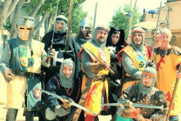
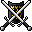

Mittelalterliche Feste
La Maisnie Champenoise lässt ein faszinierend realistisches Mittelalter wiederauferstehen. Zur mittelalterlichen Atmosphäre tragen Tänzer und Musiker in zeitgetreuen Kostümen bei.
Spannende Ritterkämpfe werden ausgetragen, bei denen die mit Kettenhemden ausgestatteten Ritter mit Schwert, Axt und Morgensten gegeneinander antreten.
Das Leben der Ritter und ihrer Knappen im Mittelalter wird anhand kleiner Szenen illustriert.
Der Hellebardier der Truppe zeigt sein ganzes Können und Geschick bei einer Demonstration mit seiner Waffe; auch die Zuschauer erhalten die Möglichkeit, sich im Umgang mit dieser Waffe zu versuchen.
Die gesamte Truppe steht den Anwesenden jederzeit für die Beantwortung aller ihrer Fragen zum Mittelalter zur Verfügung.

Schauspiel und Animationen

In Übereinstimmung mit Ihren Vorstellungen und den gewünschten Leistungen stellt la Maisnie Champenoise die jeweils benötigte Anzahl von Teilnehmern bereit, allesamt bekleidet und bewaffnet. Dann werden Duelle simuliert und Kämpfe mit verschiedenen Waffen der Epoche ausgetragen: Ein- oder zweihändiges Schwert, Streitaxt, Morgenstern, Hellebarde, Streitkolben...
Die Truppe lässt ein mittelalterliches Ritterlager entstehen, mit seinen Zelten, dem "Bogenstand" (Bogen- und Armbrustschießen), der Sarwürken-Werkstatt (Werkstatt des Rüstungsmachers, Kettenhemden = sarwat) und dem Münzmacher - natürlich gehört auch eine mittelalterliche Schmiede dazu...
Nach Wunsch wird selbst ein richtiges Ritterturnier organisiert!
Festabende, Hochzeiten...

La Maisnie Champenoise richtet für Sie ein mittelalterliches Bankett aus, mit Süßspeisen, Jongleuren und Feuerspuckern, den Zauberkünsten eines überzeugend echten "Merlin", mit Erzählungen und Liedern von Troubadouren, Verwünschungen und Schwarzer Magie von "Hexen"...
Programm für öffentliche Einrichtungen

Zwei Mitglieder der Truppe, bekleidet und bewaffnet, halten anschauliche Vorträge bzw. bieten kleinere Präsentationen zum Thema Feudalzeit, wobei auf das Lehrprogramm der Schulen oder besondere Wünsche eingegangen wird: Rittertum, Aufbau der feudalen Gesellschaft (Wirtschaft, Kriege, Religion, Zahlungsmittel...), Tätigkeit der Kopisten (Handschriften, Miniaturmalerei...), Geschichte der Bekleidung und der Waffen (Handwerkstechnik).
La Maisnie Champenoise stellt das gesamte Material für die Erheiterung seiner Untertanen: Münzen, Waffen, Kostüme, Helme und Rüstungen, Siegel, Manuskripte...
Wenn Sie an unseren Tarifen und der Verfügbarkeit der verschiedenen Leistungen interessiert sind, schreiben Sie an Philippe, unseren Hellebardier: